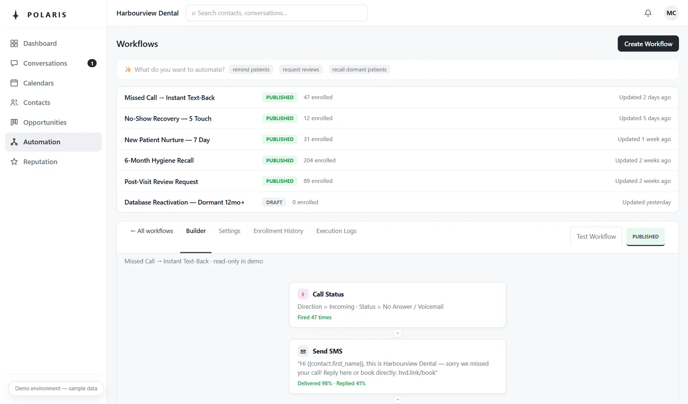
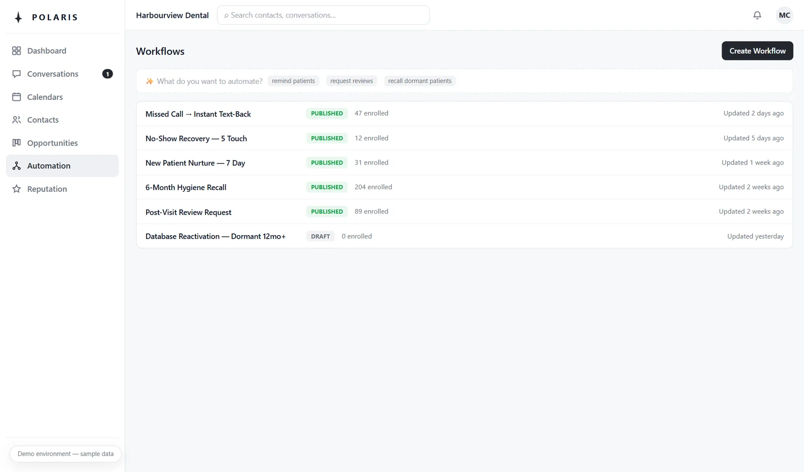
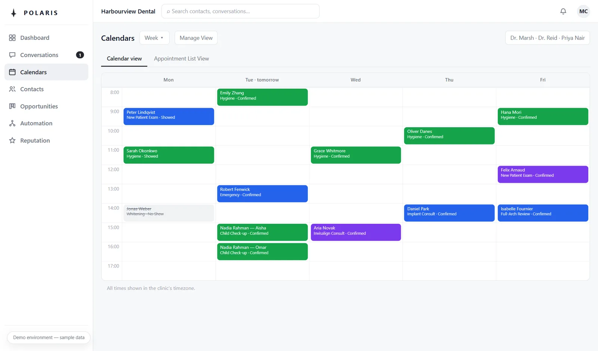

The front desk that never misses.
Polaris answers the calls your desk can't get to, chases the confirmations that stop no-shows, and quietly brings lapsed patients home — sitting on top of whatever software your clinic already runs. We set it up and run it for you. You just watch the chairs fill.
Every patient takes a route.
Polaris walks every step of it.
From a first ring to a five-star review, a patient passes through five moments where practices quietly lose them. Here's where Polaris stands in each one.
It answers before they hang up.
Your desk is with a patient. Polaris texts the caller back within seconds — with a link to book. The one who'd have dialled the next clinic stays yours.
It chases the confirmation.
A friendly reminder chain — days before, the day before, hours before — and a reply confirms them. Your team sees at a glance who's solid and who needs a nudge.
It wins the no-show back.
Anyone who misses gets a same-day "life happens — want a new time?" message, then a gentle follow-up. Most rebook themselves, that day.
It brings them home.
Patients overdue for a visit get a warm nudge with a booking link — the quiet revenue sitting in every practice's records, reactivated on autopilot.
It asks for the review.
One honest request for a Google review, at the right moment, every time. No filtering, no gating — just asked, so your reputation compounds.
Five moments your desk can't always reach. Polaris reaches all of them.
What it looks like to run.
One calm screen for your team: every conversation, every booking, every automation — visible and auditable. These are sample patients; we'll walk you through the real thing, live.



No tricks in the machinery.
It works with your software, not instead of it.
Polaris requests the slot; your desk confirms it. We don't touch your clinical records, and we won't pretend to.
Text-first, human-backed.
Messages are instant and clearly from your clinic. Nothing robotic answers your phone pretending to be a person — anything urgent routes straight to your team.
Everything here is a sample.
The video and screens show fictional patients, clearly labelled. When yours is live, the numbers will be your own.
See it running on your clinic's name.
We're taking three founding practices: setup waived and the first month free, month to month after — you cancel by doing nothing — in exchange for one honest written case study, good or bad. That's how a new service earns its proof without inventing it.